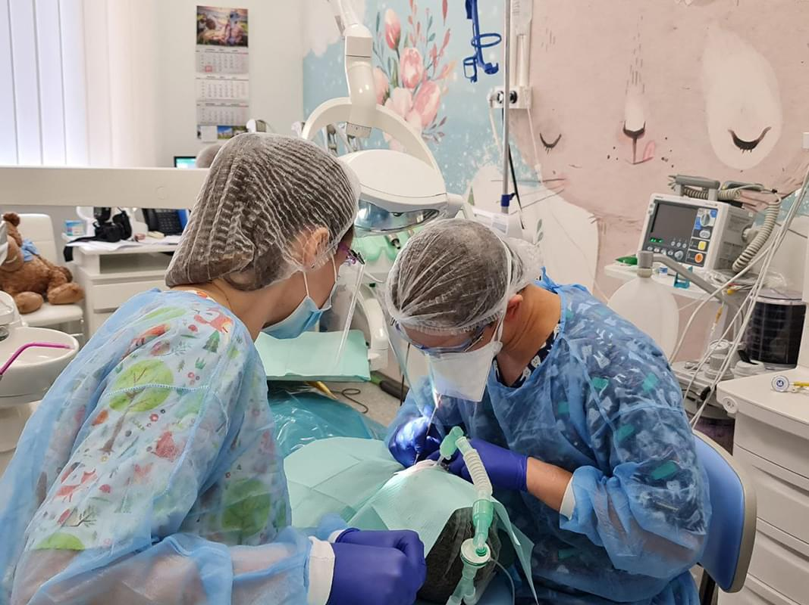
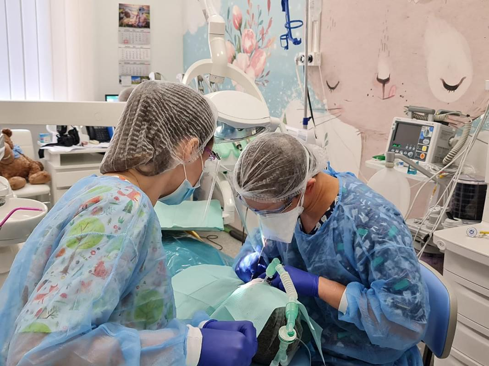

Стоматологічне лікування дітей в умовах анестезіологічного забезпечення
 
Наш курс створений для того, аби спорядити дитячого лікаря-стоматолога знаннями і вміннями, які допоможуть ефективно і швидко працювати в загальному знеболенні.
У випадку, коли дитина не готова до співпраці, а ситуація в порожнині рота не може зволікати із лікуванням, або, коли у маленького пацієнта є значний об'єм лікування, або ж у дитини (чи у дорослого) є супутня патологія, яка робить неможливим якісне,прогнозоване лікування на допомогу приходить анестезіологічна команда.
Оскільки робота в таких умовах потребує відповідних навиків та підготовки, як від лікаря, так і від клініки та персоналу, ми створили такий курс, аби допомогти лікарям освоїти ці важливі нюанси.
Лікар-стоматолог (а особливо дитячий 🙂) не займається анестезіологією, але, якщо працює з анестезіологічною командою, повинен мати уявлення про базові її поняття, основні техніки, інструменти, матеріали та препарати. Тож ми присвятили цьому кілька модулів нашого курсу.
Разом з тим, основні завдання лікаря на такому прийомі - стоматологічні і він повинен знати і розуміти, як потрібно готуватись, як працювати якісно і швидко, які можуть бути ускладнення та як їх уникати.
Стоматологічне лікування дітей в умовах анестезіологічного забезпечення - серйозний і важливий розділ дитячої стоматології, до якого не можна ставитись легковажно і без підготовки. Саме тому ми створили наш курс, аби кожен дитячий стоматолог, пройшовши його міг працювати якісно, безпечно і прогнозовано на користь наших маленьких пацієнтів.
Модулі курсу:
- Модуль 1. Вступ, про лектора та історію застосування загального знеболення.
- Модуль 2. Термінологія, або як розмовляти однією мовою з анестезіологами.
- Модуль 3. Підготовка до лікування дітей в умовах анестезіологічного забезпечення.
- Модуль 4. Команда надання стоматологічної допомоги дітям в умовах загального знеболення і її взаємодія.
- Модуль 5. Анестезіологічне обладнання, матеріали, препарати та варіанти проведення лікування: що потрібно знати дитячому стоматологу?
- Модуль 6. Стоматологічні інструменти та матеріали, які допомагають ефективно працювати в умовах анестезіологічного забезпечення.
- Модуль 7. Консультація, планування лікування, консиліум та презентація плану лікування.
- Модуль 8. Безпосередня лікувальна тактика стоматологічної роботи в анестезіологічному забезпеченні.
- Модуль 9. Рекомендації пацієнту після проведення стоматологічного лікування в умовах анестезіологічного забезпечення.
- Модуль. 10. Step by Step послідовність лікування пацієнта в умовах загального знеболення.
- Модуль 11. Як дитячому стоматологу підготуватись до роботи в загальному знеболенні?
- Модуль 12. Відеодемонстрація стоматологічного лікування в умовах анестезіологічного забезпечення. Частина 1.
- Модуль. 13. Відеодемонстрація стоматологічного лікування в умовах анестезіологічного забезпечення. Частина 2.
- Модуль 14. Відеодемонстрація стоматологічного лікування в умовах анестезіологічного забезпечення. Частина 3.
- Модуль 15. Відеодемонстрація стоматологічного лікування в умовах анестезіологічного забезпечення. Частина 4.